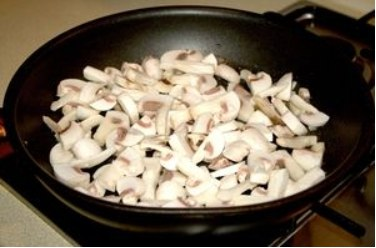
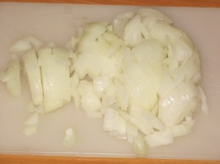
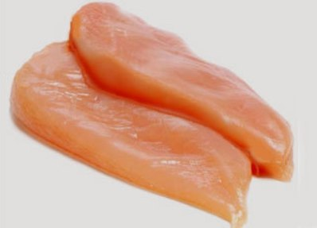
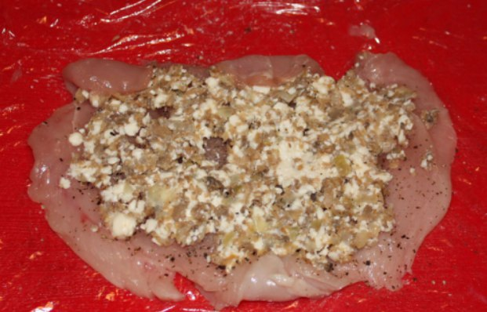
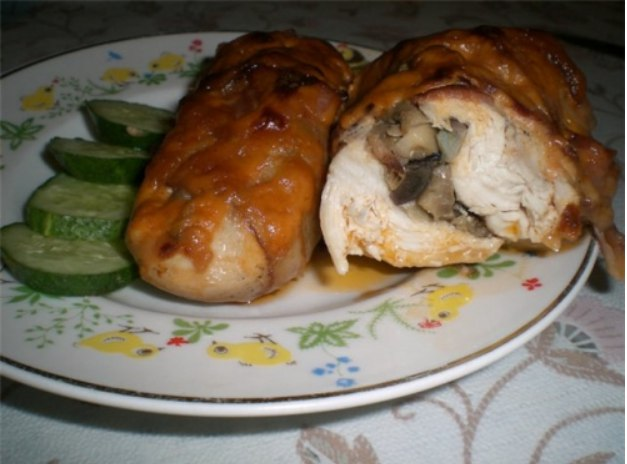

Курячі рулетики з грибами
Інгредієнти для приготування курячих рулетиків з грибами:
Куряче філе - 300 гр.
Гриби печериці - 300 гр.
Цибуля ріпчаста - 1 шт.
Рослинна олія - 40 мл
Вершки - 12 склянки
Борошно - 100 гр.
Інвентар для приготування курячих рулетиків з грибами:
Ніж
Обробна дошка
Плита
Сковорідка
Харчова плівка
Молоточок для відбивання
Скоковородка з високим бортом
Приготування курячих рулетиків з грибами.
Крок 1: Приготування начинки.

Розігріваємо сковороду.
Нарізати дрібно ножем наші гриби ( гриби підійдуть будь-які, на ваш смак ).
Викладаємо їх на розігріту сковороду з рослинним маслом, помішуємо і смажимо на середньому вогні 10-15 хв.

Цибулю нарізаємо на дрібні кубики. Додаємо в гриби, посолити, поперчити за смаком і перемішуємо.
Обсмажте все на слабкому вогні до золотистого кольору.
Потім викласти наші гриби на тарілку, нехай остигають.
Крок 2: Підготовлення курінного філе.

Куряче філе промити, потім розрізати ножем великі шматки філе навпіл.
І так у нас вийде кілька плоских шматочків філе. Посоліть все за смаком.
Оберніть кожен шматочок у пещевую плівку і за допомогою молоточка обережно відбиваємо кожен шматок з обох боків так, щоб він не развалися.
Крок 3: Заправка начинкою, смаження і тушкування.

На кожне відбите філе викладаємо по трохи грибної начинки. Загортаємо в рулетик, а краї можна закріпити дерев'яною зубочисткою.
Обваляйте обережно в борошні з усіх сторін. Розігріваємо сковорідку з високими бортами з олією і обсмажуємо наші рулетики на сильному
вогні до рум'яної скоринки. Коли обсмажиться додати вершків. Доводимо до кипіння і тушкувати під кришкою на повільному вогні приблизно 20-30 хвилин.
Крок 4: Подаємо до столу.

Блюдо викладіть на тарілку, дайте трохи охолонути. прикрасьте рубаною петрушкою. Можна подавати до столу.
Смачного!
Поради:
- Начинку можна зробити абсолютно різну на будь-який смак: курага, сир, шинка.
- На гарнір можна використовувати рис або овочі.
- Як підливи можна використовувати вершки на сковорідці.
Дата публікації: 20 березня 2024
Автор: cookery